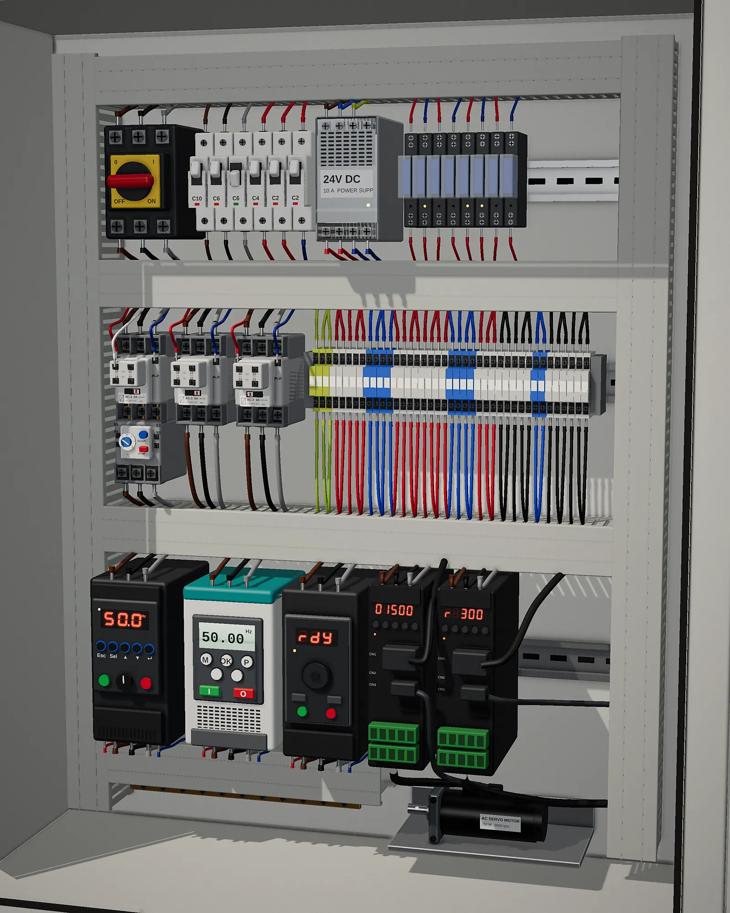

تعلّم الكلاسيك كنترول والانفرتر والسيرفو بيدك، قبل أن تقف أمام اللوحة.
كورسات ومحاكيات تفاعلية لأشهر أجهزة التحكم في المصانع، بالمفاتيح والشاشة والأطراف نفسها. توصّل الأسلاك، وتضبط الباراميترات، وتشغّل المحرك، وتشخّص العطل وتصلحه، من المتصفح مباشرة.
جديد على الكهرباء؟ ابدأ بـكورس الأساسيات. لديك خبرة؟ افتح محاكي PowerFlex 525 وادخل من «ابدأ من هنا».

انفرترات وكونتاكتورات وسيرفو: كل ما في اللوحة تتعلّمه هنا ←اختر كورسك وابدأ
في كل كورس شرح وتمارين ومحاكي.
الموقع بالأرقام
من أين تبدأ؟ اتبع هذا الترتيب
كل كورس يبني على ما قبله. وإن كانت لديك خبرة فابدأ من المرحلة التي تناسبك.
- المرحلة الأولى · للمبتدئين
أساسيات الكهرباء
إن كنت جديدًا على الكهرباء فابدأ من هنا.
- الجهد والتيار والمقاومة والقدرة
- التوالي والتوازي والمواد الموصلة
- الأفوميتر وقياس الأجهزة
- توصيل المصباح والمقبس وأعطال المنزل
- المرحلة الثانية
الكلاسيك كنترول
توصّل دوائر المحرك بيدك سلكًا سلكًا.
- الريلاي والكونتاكتور والحماية
- التايمرات وتشغيل المحرك 3 فاز
- ستار/دلتا والفرملة وعكس الاتجاه
- 24 تمرينًا عمليًّا وشهادة إتمام
- المرحلة الثالثة
قراءة الرسومات الكهربية
تقرأ رسم أي لوحة وتتتبّع منه العطل.
- أنواع الرسومات والرموز IEC و NEMA
- أرقام الأطراف والإحالات Cross reference
- دائرة التحكم والـ Single line
- تتبّع العطل من الرسم
- المرحلة الرابعة
أجهزة القياس Instrumentation
الحساسات والإشارات الموجودة في كل مصنع.
- إشارة 4–20mA وأعطالها
- الإنكودر: التزايدي والمطلق
- حساسات الحرارة: الثرموكبل و PT100
- خلية الوزن Load cell ومعايرة الميزان
- المرحلة الخامسة
الـ PLC
تكتب برامج Ladder وتشغّلها على محاكي.
- توصيل الدخل والخرج PNP و NPN
- التثبيت الذاتي و Set/Reset
- التايمرات والعدادات والإشارات التماثلية
- مشاريع على ماكينات متحركة
- المرحلة السادسة
الانفرترات والسيرفو
محاكيات لأشهر الأجهزة في المصانع.
- Allen-Bradley و Siemens و Schneider
- Delta و Danfoss و Omron
- التوصيل والباراميترات والتشغيل
- أعطال تُحدثها بنفسك ثم تصلحها
- المرحلة السابعة
إنترنت الأشياء الصناعي IIoT والشبكات الصناعية
كل الشبكات الصناعية من الكابل إلى السحابة، مع محاكي من 11 تمرينًا.
- Modbus و PROFIBUS و PROFINET و CAN
- OPC UA و MQTT وبوابة Node-RED
- لوحات متابعة وإنذارات و OEE وصيانة تنبؤية
- تشخيص الأعطال ومشروع خط إنتاج
- المرحلة الثامنة
SCADA و HMI
شاشات تشغيل حديثة تربطها بالـ PLC، على محطة SCADA حيّة ومصمّم شاشات.
- WinCC Unified والوسوم والاتصال بالـ PLC
- شاشات ISA-101 والوجوه الجاهزة
- إنذارات ISA-18.2 والمنحنيات والوصفات
- الصلاحيات والتكرار وتشخيص الأعطال
- المرحلة التاسعة
تصميم اللوحات الكهربية
تصمّم لوحة توزيع من حساب الأحمال إلى الرسم والاختبار، على حاسبة ومصمّم لوحات.
- حساب الأحمال وتيار التصميم
- القواطع والكابلات والبارات النحاسية
- هبوط الجهد وتيار القصر والانتقائية
- التأريض ومعامل القدرة ولوحات MCC
- المرحلة العاشرة
صيانة المحركات والمحولات
تختبر المحرك والمحول بالأجهزة الحقيقية وتقرأ النتيجة وتقرّر، على ورشة محركات ومحطة محولات.
- الميجر و PI ومقاومة الملفات
- المحامل والتشحيم والاهتزاز
- المحاذاة بالليزر وتشخيص الأعطال
- TTR وزيت المحول وتحليل الغازات
- المرحلة الحادية عشرة
صيانة محركات السيرفو
تفحص محرك السيرفو وإنكودره وفرامله ودرايفه، وتتتبّع الإنذار حتى سببه، ثم تصلح وتضبط المحور.
- الملفات والعزل و Back-EMF
- كل أنواع الإنكودر وضبط الإزاحة
- الفرامل والمحامل والكابلات والتشويش
- الدرايف و IGBT والإنذارات ومرشّح Notch
- المرحلة الثانية عشرة
أساسيات الميكانيكا
فيزياء الماكينات بالألعاب: القوة والحركة والعزم والتروس.
- القوة والسرعة والعجلة
- العزم والروافع
- التروس والبكر
- الضغط والهيدروليك
- المرحلة الثالثة عشرة
ميكانيكا الماكينات
عمل الورشة: تربط وتركّب وتقيس وتشحّم أجزاء الماكينات.
- المسامير وعزم الربط والكوبلنج
- الميكرومتر والرولمان ومانع التسريب
- التروس وصندوق التروس والسيور
- التشحيم وتشخيص الأعطال
أسئلة مقابلات العمل
221 سؤالًا تُطرح فعلًا في مقابلات الكهرباء والصيانة والأتمتة، بإجابات مختصرة واختبار لنفسك.
خطوات العمل في المصنع نفسها، بالترتيب
تفتح محاكيات الأجهزة على الوضع الموجّه: 6 تمارين محلولة، في كل تمرين 4 خطوات. وبعدها الوضع الكامل برسم توصيل حيّ وجداول الباراميترات والأعطال والمراجع.
اختر الجهاز
الموديل نفسه الذي أمامك في العمل أو الذي ستُمتحن عليه.
وصّل الأسلاك
القدرة والمحرك وأطراف التحكم، والمحاكي ينبّهك إلى أي خطأ.
أدخل الباراميترات بيدك
من لوحة المفاتيح بالأزرار نفسها، وتظهر علامة ✓ عند القيمة الصحيحة.
شغّل المحرك
Start و Stop والسرعة وعكس الاتجاه، وراقب تغيّر التيار والتردد.
أحدِث عطلًا ثم أصلحه
حمل زائد، فقد طور، جهد زائد… افهم الكود ونفّذ Reset بالطريقة الصحيحة.
لمن يتعلّم، ولمن يعلّم
للطلاب والفنيين
- جرّب على الجهاز دون خوف من إتلاف شيء.
- تعلّم لوحة المفاتيح قبل أن تقف أمامها في المصنع.
- افهم كود العطل وسببه وطريقة إصلاحه.
- تمارين تُصحَّح تلقائيًّا، وتقدّمك يُحفظ.
- شرح بالعربية لكل باراميتر، لا ترجمة حرفية.
للمدربين ومراكز التدريب
- اعرض المحاكي على البروجيكتور واشرح عليه مباشرة.
- عطل حقيقي في ثانية دون فك اللوحة.
- واجبات جاهزة: يحل الطلاب التمارين من المنزل.
- مقارنة الوظيفة نفسها بين الماركات في محاكي واحد.
- دون تثبيت برامج: رابط واحد للفصل كله.
لديك سؤال أو تريد محاكيًا لجهاز معيّن؟
أرسل إلينا الموديل الذي تعمل عليه في المصنع أو مركز التدريب، فنحن نرتّب الكورسات القادمة بحسب الطلبات.
جاهز للبدء؟
اختر جهازًا وادخل من «ابدأ من هنا». أول تمرين يستغرق نحو 10 دقائق، وبعده تكمل وحدك.